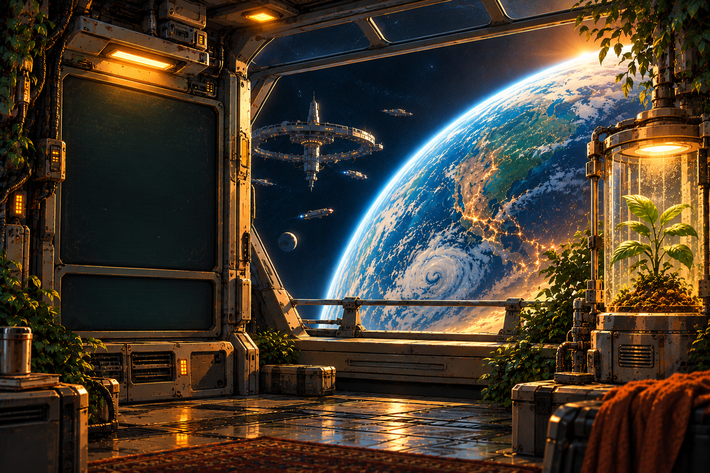

TRANS-PLANT
A roguelike, in space, with paperwork.
LOADING MODULES

TRANS-PLANT
New Game
Continue
Records
Ship status
Click or press any key to skip
> PRESS ANY KEY TO BEGIN <
Choose Your Trail
×
ENGINES
RIDICULOUS SPEED
RATIONS
STANDARD
WATER
50%
/
50%
LOG
🌾
GROWTH
HARVEST
HEALTH
FOOD
H2O
O2
FUEL
HULL
Stop
MARV
YOUR TURN
HULL
100%
ENEMY
100%
MOR
50
Continue
Run Report
Crew
Resources
Back
New Run
SHIP'S LOG
×
FROM THE LOG
×
RECORDS
×
BEST ARRIVAL PER DESTINATION
LAST 10 VOYAGES
CARGO HOLD
0
/
0
SLOTS
0
g
✕
Ship
Resources
GEAR
MATERIALS
UPGRADES
SORT:
Recent
Recent
A–Z
Slot cost
Sell price
Click an item or resource tile for details.
SELL
USE
JETTISON
⚠ JETTISON?
−
1
+
CANCEL
JETTISON ALL
JETTISON 1
VENDOR WARES
YOUR CARGO
⚠ SELL?
CANCEL
SELL 1
MARV
MINING MODE
ENERGY
100%
THE BELT
ORDERS
⚡
ENGINES
⚠
LIGHT SPEED
RIDICULOUS
LUDICROUS
PLAID
🍽
RATIONS
⚠
VENDING MACHINE
STANDARD
PIG OUT
💧
WATER ALLOCATION
⚠
🌱
PLANT
50%
50%
CREW
👥
☀
ARIA:
GROWBAY
WHEAT
·
FLOWERING
STAGE
·
GROWTH DAY
47
/
90
‹ BACK
X
GROWTH
62%
HEALTH
68%
FLOWERING
Harvest
READY ON
DAY 125
DR. OSEI
+15% growth · +15% yield
▸
Treat
Inspect
GROWTH MODIFIERS
MONITORED
NEXT STAGE
Flowering → Maturing in ~14 days
WATER
50%
plant
MATCHED
NOMINAL
crew
50%
+40 FOOD
FABRICATOR
DAY
47
·
153 LEFT
X
SORT:
Time
▾
Name
Time
Complexity
FILTER:
All
▾
All
Unlocked
Craftable now
🛠️
HULL PATCH
Basic hull repair material.
CRAFT
CRAFTING
IDLE
—
CANCEL
+1 HULL PATCH
GAME
✕ CLOSE
EXCELLENT
MARV
CLOSE